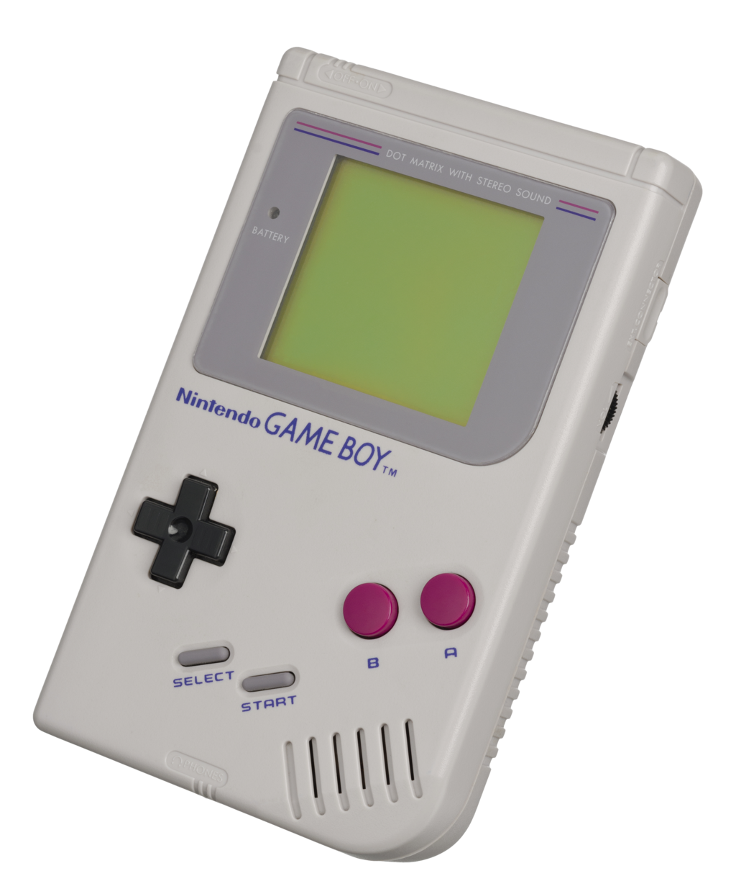
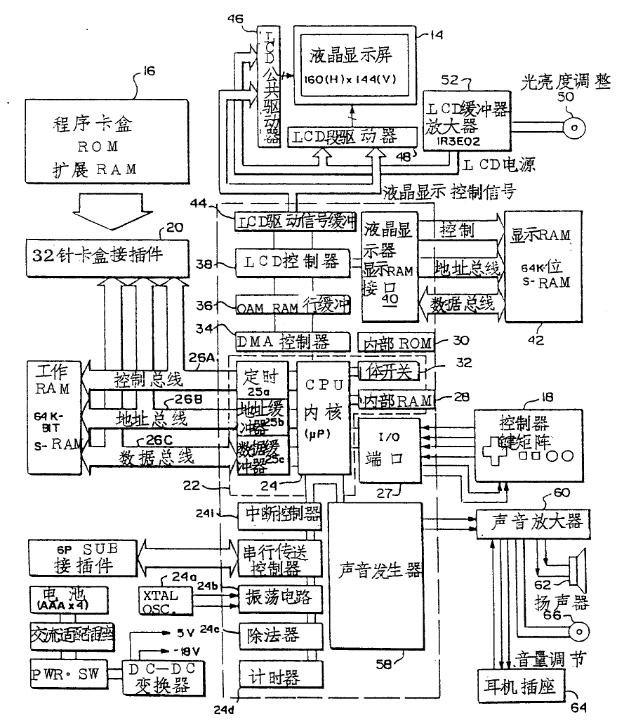

赛博考古-请回答1989：Game Boy （一）
写在前面 ：这是Game Boy考古系列的第一篇（也不知道能坚持写几篇…），将会主要介绍Game Boy的背景故事，以及硬件参数。
最近，米忽悠的星穹铁道刚上线，任天堂也在近期发布了林克塞尔达传说王国之泪。游戏爱好者可以说是提前过年了。
让我们把时钟拨回到1989年4月21日。
曾经的扑克牌大厂任天堂发布了第一款Game Boy。

与它同时发布的，还有一款游戏——日后家喻户晓的管道工人马里奥的开山之作《超级马里奥大陆》。 作为一个程序员，由衷地佩服三四十年前的前辈，用性能孱弱的8位机芯片，和极其有限的资源，完成了流畅的游戏动画（尽管是2-bit灰度屏），甚至还有背景音乐，并且能提供30小时的游戏时间，前辈们的英姿令人钦佩。
小时候零花钱非常有限，实力并不允许我买一台Game Boy，现在来一次赛博考古，四舍五入也算是圆梦了。
本文的所有资料都来自互联网，例如：
- JackTech的（系列视频）
- Michael Steil大神（真·大佬）的演讲（演讲）
- Dante Gonzales和Ian Doten的（Game Boy Architecture）
- Joonas Javanainen的（Game Boy: Complete Technical Reference）
- FH KARLSRUHE - UNIVERSITY OF TECHNOLOGY的Game Boy兴趣小组的（The Game Boy Project）
- 以及知乎，百度，谷歌，维基百科等等。
与其说是考古，倒不如说是拾人牙慧，以及对大佬们的拙劣总结。
Game Boy主板如下图所示：

其中位于中心位置，丝印为“DMG-CPU”的，是Game Boy的主控芯片。DMG的全称是“Dot Matrix Game”，这个缩写几乎印在了所有任天堂为Game Boy定制的芯片上。其真实型号为Sharp的LR35902（注：甚至有人使用RUST写了一个LR35902的虚拟机。遗憾的是，我目前并没有找到LR35902官方的datasheet，但是，找到了一个由爱好者编写的手册。
位于芯片右上方的，是板载的8K bytes的RAM（在老任的专利中称为Work RAM）；位于芯片右下方的，是板载的8K bytes的video RAM（在老任的专利中称为DISP RAM）。两块RAM都是Sharp的LH5264N4。
LR35902主频为4.194304 MHz（但是实际上，可以说是只有1.048576 MHz，因为机器周期为时钟周期的四分之一），单核8080 8位机架构，可以看作是Intel 8080和Zilog Z80结合后的变体，真正的集成在CPU内部的RAM只有127 bytes，在很多资料中被称为HRAM或High RAM。保守估计，现在三五块钱人民币一个肉包子钱的单片机芯片，性能应该是它的三五百倍以上。
作为对比，2017年任天堂发布的Switch采用了Nvidia的Tegra X1，最高主频为921 MHz，4核Cortex A57+4核Cortex A53，并且还有型号为GM20B Maxell的GPU。
LR35902还有256 bytes的On-CPU-Die ROM（也就是Boot ROM），用于检查游戏卡带的头部存储内容是否正确，在屏幕上播放任天堂启动动画，并播放“po-ling”声音。后续有机会的话我会单独介绍。
板子上还有一个晶振，频率为4.194304 MHz，型号为Daishinku的D419A2，可能是主板上为数不多的非夏普的器件。
在板子的右边，还有一个音频功放芯片，丝印为“DMG-AMP IR3R40 9143 A”，真实型号是Sharp的IR3R40。
位于最下方的，就是Game Boy游戏卡的插槽。
通过一条连接线，Game Boy甚至支持设备连接多人游戏功能。
我还找到了任天堂1990年在中国为Game Boy申请的专利（专利号：CN1031376C），从专利中， 可以看到老任画的中文系统框图：

从上面的这些信息，可以说，LR35902的每一寸潜力都被发挥到了极致。
最近，同事从实验室“发掘”了一台产自1995年的HP（没错，就是惠普）的频谱分析仪，也让人不禁感慨，很难想象，早期程序员是如何使用现在看来可以称为是“简陋”的硬件，实现如此复杂的功能。上古程序员简直是披着科技外壳的魔法师。
后续我会更详细的介绍Game Boy的CPU（指令架构等），以及ROM和读卡机制等等，希望这个考古系列能坚持下去。